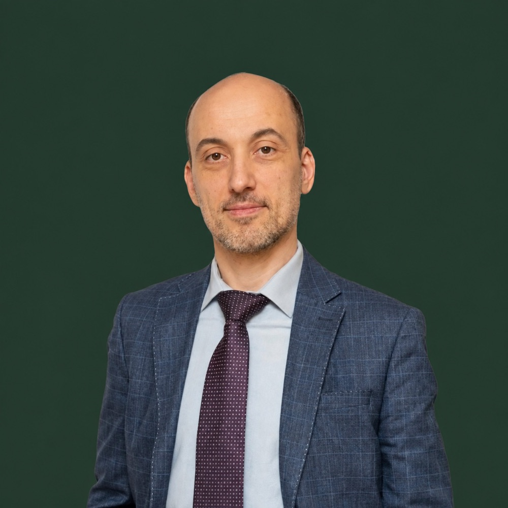
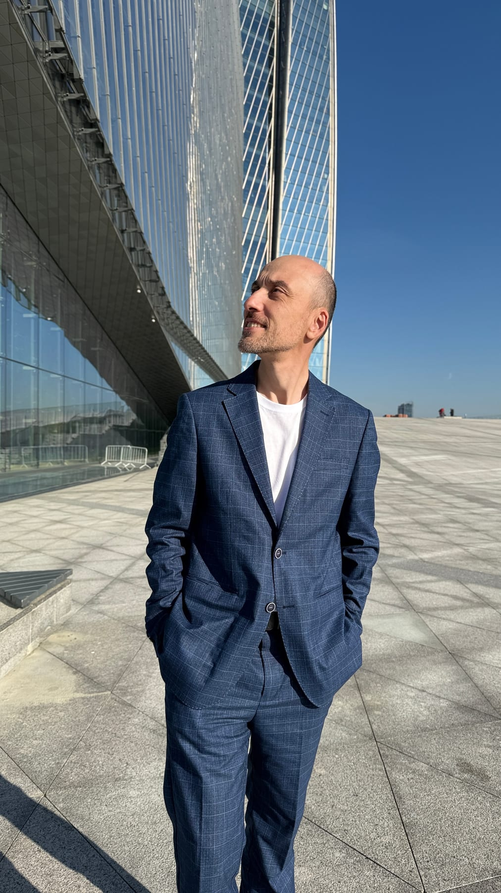

Тревога и напряжение
Когда мысли ходят по кругу, а тело словно всё время остаётся настороже.
Онлайн и очно в Санкт-Петербурге
Индивидуальная работа со взрослыми в интегративном подходе: тревога и напряжение, внутренний критик, жизненные перемены, отношения, идентичность и поиск опоры.
Сессия 90 минут · 2 500 ₽

Пространство внимательного диалога
На сессиях можно остановиться, рассмотреть происходящее без давления и постепенно найти больше ясности, свободы выбора и опоры на себя.
Я задаю проясняющие вопросы и помогаю замечать не только содержание рассказа, но и то, как переживание проявляется в речи, эмоциях и теле. Мы не ищем «правильного» ответа — мы исследуем то, что действительно происходит с вами.
С чем можно обратиться
Перечень помогает сориентироваться, но не заменяет первичного обсуждения запроса.
Когда мысли ходят по кругу, а тело словно всё время остаётся настороже.
Смена работы, завершение или переустройство отношений, новый этап жизни.
Стыд, самообесценивание, страх ошибки и ощущение «со мной что-то не так».
Неуверенность, трудность выбирать и доверять собственным ощущениям.
Вопросы личных ролей, принадлежности, ценностей и жизненного направления.
Желание лучше замечать телесные реакции и понимать их связь с переживаниями.
Тревога и стыд, связанные с иностранным языком, речью и правом быть услышанным.
Ценностные и духовные темы — если такой контекст важен самому клиенту.
Как проходит работа
Для меня важны честный контакт, ясные границы и уважение к вашему мировоззрению. Конкретные инструменты выбираются под запрос, а не наоборот.
Слушаем мысли и слова, замечаем эмоции, интонации и телесные ощущения.
Без давления, стыда и готовых советов. Вы определяете глубину и скорость работы.
Сначала обсуждаем запрос. Если нужен другой формат или специалист, я прямо скажу об этом.

Обо мне
Я — Роман Сейтумеров. Веду индивидуальную работу со взрослыми и продолжаю обучение телесно-ориентированной психотерапии. В моём опыте соединяются медицинская подготовка, педагогика, коучинг, работа с иностранными языками и межкультурной коммуникацией.
Этот путь помогает объяснять сложное понятным языком, слышать оттенки формулировок и оставаться внимательным к связи психики и тела. При этом психологическое консультирование не является медицинской услугой и не заменяет помощь врача.
Духовно-чувствительный подход
Если вам важно, чтобы в психологической работе было место духовным вопросам, мы можем обращаться к библейским сюжетам, архетипам и метафорам — только в той мере, в которой это соответствует вашему мировоззрению и помогает осмыслять опыт.
Это не религиозное наставничество и не обязательная часть работы.
Канал «Коучинг и Личность» ↗
Формат
Напишите или позвоните и коротко расскажите о запросе. Мы обсудим формат и договоримся о времени.
Я скажу об этом прямо и, если возможно, порекомендую обратиться к специалисту подходящего профиля.
Конечно. Духовные образы и тексты появляются только по желанию клиента. Основой остаётся психологическое консультирование.
Связаться
Отвечу, подходит ли мой формат работы, и предложу следующий шаг.
Юридическая информация
ИП Сейтумеров Роман РасимовичИНН 782618747007ОГРНИП 310784713800785